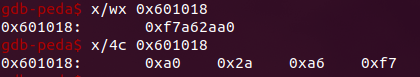
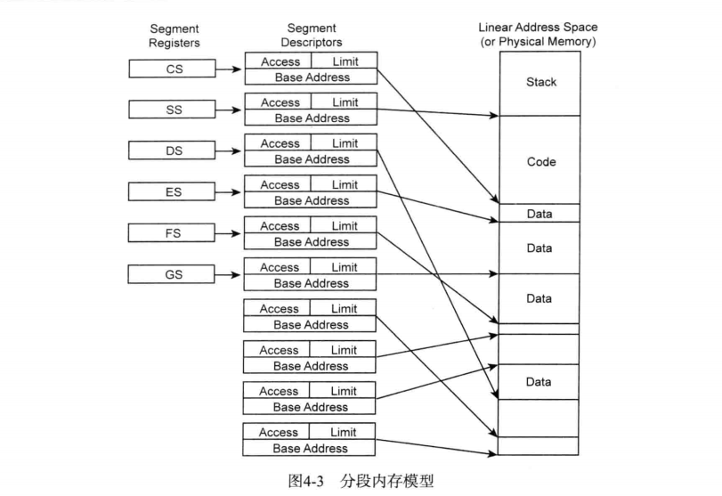
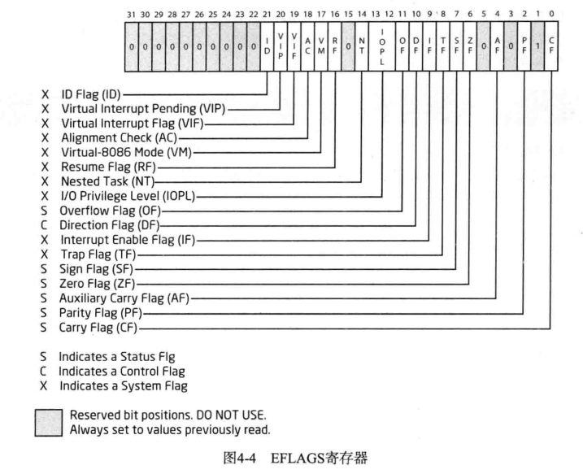
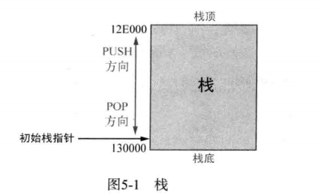

逆向工程学习-基础篇
逆向工程学习-基础1
字节序：
1.小端序
1.当一个数据只有一个字节时，大小端序都一样
2.地址高位存储数据的高位，人眼看来是逆序存储

2.大端序
1.地址低位存储数据高位，人眼看起来是正常的
2.应用于大型服务器和risc系列的CPU。
另外：
【字符数组】在内存中是连续的，无论大小端序，储存顺序相同
寄存器：
基本程序运行寄存器
| 寄存器类型 | 寄存器名称 |
|---|---|
| 通用寄存器 | eax, ebx, ecx, edx, esi, edi, ebp, esp |
| 段寄存器 | cs, ds, ss, es, fs, gs |
| 程序状态与控制寄存器 | EFLAGS |
| 指令指针寄存器 | EIP |
通用寄存器
ESP（栈顶指针）:指示栈区域的栈顶地址。
EBP（栈帧指针）:表示栈区域的基地址，函数被调用时，保存ESP的的值，函数返回时再将值还给ESP，以保证栈不会崩溃（栈帧技术）。
ESI,EDI：这两个寄存器与特定指令（LODS, STOP, REP, MOVS等）一起使用时，主要用于内存复制（例：upx解压缩时恢复upx0节区）
段寄存器
1.什么是段：是一种将内存划分为多个区段的内存保护技术，与分页技术一起将虚拟内存变为实际物理内存。段内存记录在Segment Deskcriptor Table(SDT)段描述表中，段寄存器持有这些SDT的索引

每个段寄存器指向的段描述符结合虚拟内存，形成一个线性地址，在借助分页技术，线性地址转化为实际的物理地址（如果没有分页技术，线性地址直接变成物理地址）
程序状态与控制寄存器
就是所说的标志位寄存器，一开始我认为是不同的寄存器，现在发现是一个寄存器中的不同的位

32位程序中，该寄存器由原来的16位的FLAGS寄存器拓展到了32的EFLAGS寄存器，其中常用的有ZF, OF, CF。
ZF（0标志）：若运算结果是“0“，那么该标志位为”1“
OF（溢出标志）：有符号整数溢出时，该标志位为”1“；或最高有效位改变时，该标志位为”1“
CF（进位标志）：无符号整数溢出时为”1“
指令指针寄存器
当程序运行时，cpu会读取EIP中的一条地址，当地址传递到缓冲区后，eip会增加，增加的大小就是读取指令的字节大小。
栈：
特征
一种由高地址像低地址拓展的数据结构
暂时保存函数内部的局部变量
- 传递参数
- 保存函数的返回地址（就是call指令的下一条地址）

栈操作
1.两个指针：栈顶指针ESP；栈帧指针EBP
2.向栈中push数据时，栈顶指针ESP会减小（上移），当pop数据时，ESP会增加（下移）。
3.栈顶指针（ESP）在初始状态下指向栈底（高地址），所以初始化栈即为：
1 | push EBP //使用EBP前先将已有值保存在栈中 |
栈帧
1.是什么：是利用EBP（栈帧指针）寄存器访问栈内局部变量、参数、函数返回地址等的手段。
2.为什么需要用到栈帧指针EBP：因为栈顶是在不断变化的（push, pop, call等都会影响栈顶），所以如果用ESP来当作基址进行索引是很复杂的，所以就需要一个相对固定的来打下手的帮忙，就是EBP。所以在开始的时候，都会把esp的值给ebp。
函数调用约定
_cdecl
C语言的默认调用方式，调用者负责恢复栈结构。
1 | add esp, 0x8 |
这里因为push了两个int类型的参数，所以栈空间-0x8
好处：可以向 被调用函数 传递 参数可变 的函数
stdcall
由被调用者恢复堆栈
该调用方式被Win32 API采用，以获得更好的兼容性
fastcall
与stdcall类似，只不过前两个参数通过寄存器【ECX, EDX】快速调用。顾名思义，这里可以实现更快的调用函数，因为CPU访问寄存器的速度远高于CPU访问内存的速度。